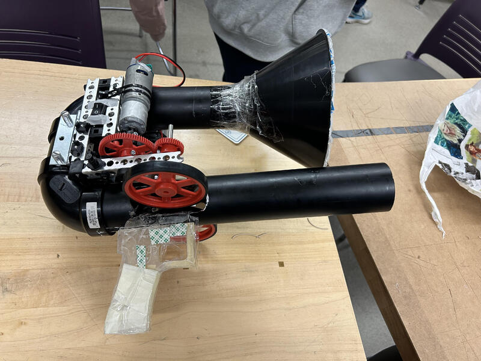
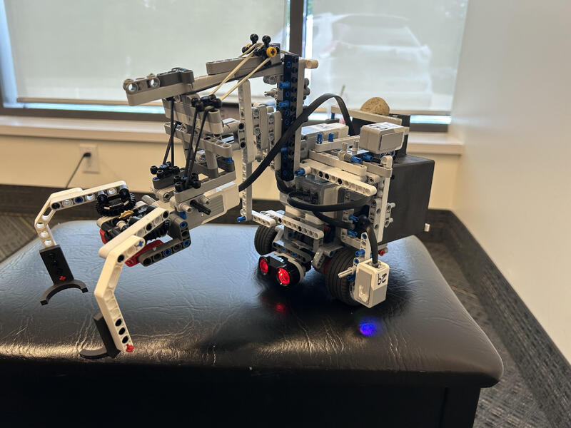

Nov 2023 - Dec 2023
During my first year at the University of Waterloo, I collaborated with a team in ME100 to design and create an innovative toy for the company Spin Master. We developed a ball launcher specifically tailored for table tennis-sized balls. This hands-on project was both exciting and challenging, combining mechanical design with electrical integration. It pushed us to think creatively when facing technical hurdles and to leverage skills such as manufacturing, electronics, and CAD. Throughout the project, I gained valuable experience in project management and problem-solving, further honing my abilities in Microsoft Excel and creative design.
May 2024 - July 2024
As part of a hands-on project in the course of ME101 at the University of Waterloo, I contributed to the design and development of ECOBOT, an autonomous LEGO EV3 robot engineered to identify, pick up, and store trash. The robot utilized ultrasonic sensors for precise detection and featured a mechanical arm and claw powered by dual motors and a gear rack, enabling vertical movement. My role included designing and fabricating components through 3D printing and laser cutting, such as the claw grippers, trash items, and a custom shell for aesthetics and balance. ECOBOT required minimal human intervention, operating autonomously through optimized coding and LEGO EV3 components. This project further honed my skills in design engineering, teamwork, and programming with ROBOTC.